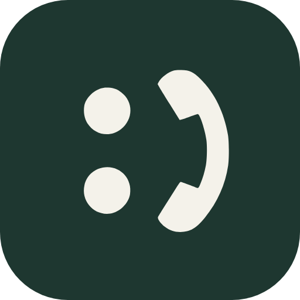

Cello · intern
Dit zijn echte PNG-bestanden (512 × 512, transparante hoeken), geen mockups. Ze staan in de map favicon/ van het project; rechtsklik → afbeelding opslaan werkt ook. Het dambord eronder is er alleen om de transparantie te tonen.
Crème · jouw keuze
cello-favicon-creme-rond-512.png
Vlak #F4F2EA · merkteken #1E3730
cello-favicon-creme-afgerond-512.png
Vlak #F4F2EA · merkteken #1E3730 · hoekradius 23%
Donkergroen · nu de favicon van de site

favicon-512.png / -180 / -32 in public/
Vlak #1E3730 · merkteken #F4F2EA. Dit staat nu in de <head> van de site.
cello-favicon-donker-rond-512.png
Zelfde kleuren, maar volledig rond in plaats van afgerond vierkant.